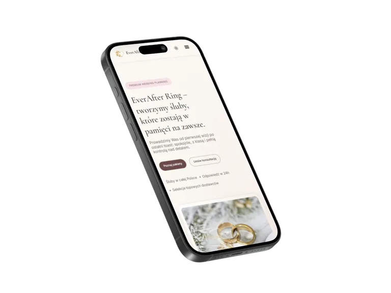
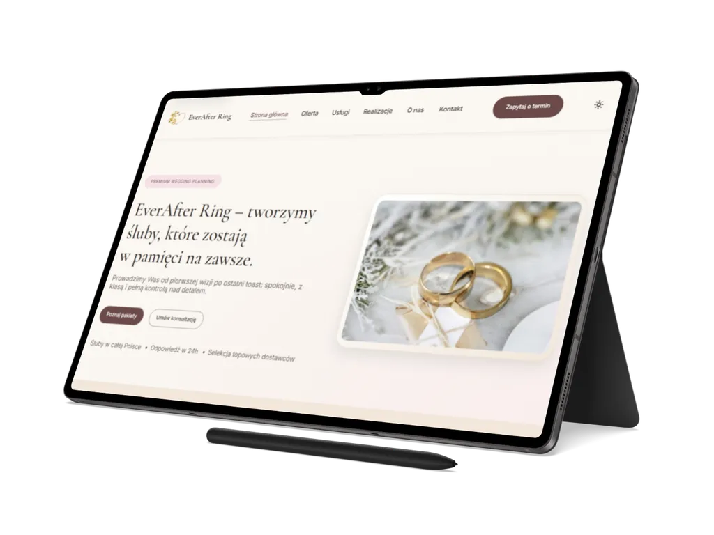

01
EverAfter Ring
Statyczny, wielostronicowy serwis dla marki wedding planning, z ofertą, usługami, realizacjami, kontaktem, stronami prawnymi i technicznym przygotowaniem do publikacji.
Przegląd projektu
EverAfter Ring to kompletna, statyczna strona usługowa dla branży ślubnej: elegancka w odbiorze, ale oparta na praktycznej strukturze MPA.
Projekt obejmuje stronę główną, ofertę, usługi, realizacje, informacje o marce, kontakt, potwierdzenie formularza oraz strony prawne.
Serwis został przygotowany jako referencyjna realizacja dla marki wedding planning. Zamiast pojedynczego landing page'a pokazuje pełniejszy układ informacyjny: prowadzi od pierwszego wrażenia, przez zakres usług i przykładowe realizacje, do spokojnej, czytelnej ścieżki kontaktu.
Wspólne elementy layoutu są utrzymywane w partialach, a interakcje po stronie
klienta obejmują responsywną nawigację, obsługę menu mobilnego, walidację formularza
i komunikaty statusu w regionie aria-live.
UsługiBranża ślubnaStrona firmowaPremium
Zakres i akcenty
Case study pokazuje, jak statyczny serwis może obsłużyć pełną komunikację marki usługowej: od oferty i zaufania po formularz oraz standard wdrożenia.
02
Nawigacja i formularz
03
SEO i pipeline produkcyjny
Technologie i standard
EverAfter Ring został zbudowany w lekkim stacku HTML, CSS i Vanilla JavaScript, z własnym procesem builda oraz lokalnie utrzymanymi zasobami.
Runtime opiera się na HTML5, CSS i modułach ES. Style są zorganizowane przez
css/main.css, a zachowania interaktywne są rozdzielone na moduły
odpowiedzialne za partiale, nawigację, formularz i efekt ruchu obrazu w hero.
-
wspólne partiale
headerifootersą ładowane w źródle i osadzane w HTML podczas builda, -
proces produkcyjny korzysta z
esbuild,lightningcssi własnego skryptuscripts/build.mjs, -
projekt uwzględnia
robots.txt,sitemap.xml, JSON-LD, lokalne fonty WOFF2 oraz jawne wymiary obrazów.


Dalszy krok
Przejdź do wersji live serwisu albo wróć do pełnego portfolio.
EverAfter Ring pokazuje, jak statyczny front-end strony usługowej może połączyć elegancką prezentację marki, ofertę, realizacje, formularz oraz solidny standard techniczny.